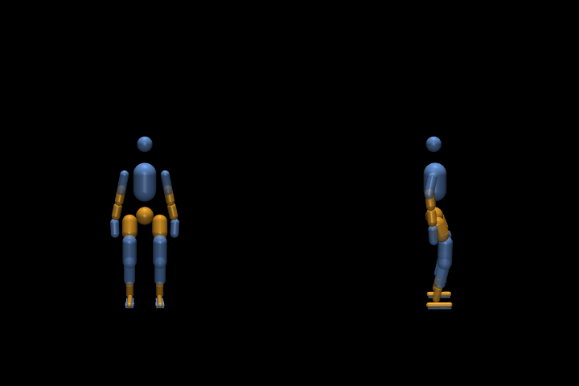
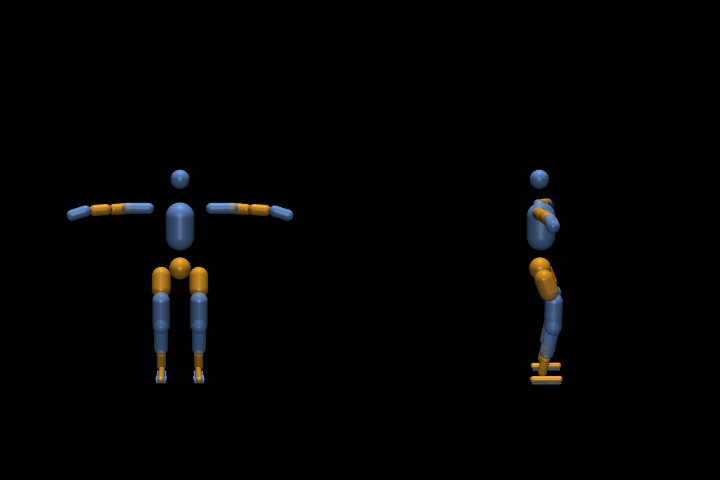
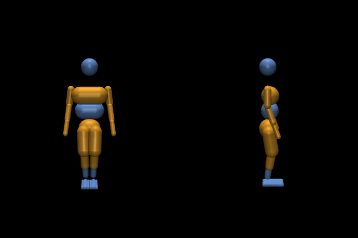
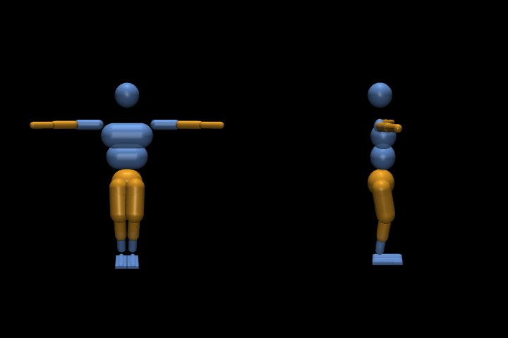
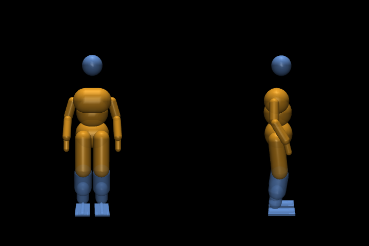
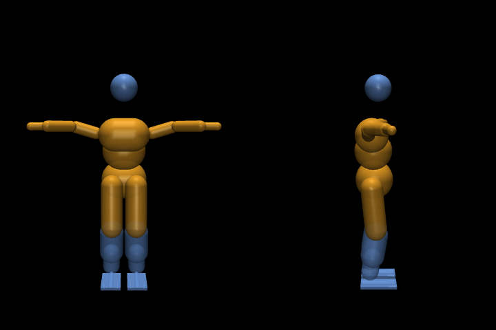

Self-collision audit
261020. training/scripts/collision_audit.py, MuJoCo 3.15.0, mj_geomDistance between collision primitives
on bodies that are not the same or parent and child; overlap = deeper than 0.1 mm. "Enabled" = the simulation collides the pair
(contype / conaffinity, no exclude). "Any" = every non-adjacent pair, which is what AGENTS.md section 3 asks to collide.
| Body | Primitives | Non-adjacent pairs | Enabled | Zero: enabled | any | Rest: enabled | any | T-pose: enabled | any |
|---|---|---|---|---|---|---|---|---|---|
| g1 | 27 | 326 | 32 | 0 | 4 | 0 | 6 | 0 | 6 |
| kim | 24 | 253 | 32 | 0 | 9 | 0 | 9 | 0 | 7 |
| trump | 24 | 253 | 32 | 0 | 7 | 0 | 7 | 0 | 7 |
g1
27 collision primitives, 326 pairs on non-adjacent bodies, of which the simulation collides 32: a_left_foot1_collision / a_right_foot1_collision, a_left_foot1_collision / a_right_foot2_collision, a_left_foot1_collision / a_right_foot3_collision, a_left_foot1_collision / a_right_foot_box_collision, a_left_foot1_collision / a_right_linkage_brace_collision, a_left_foot1_collision / a_right_shin_collision, a_left_foot2_collision / a_right_foot1_collision, a_left_foot2_collision / a_right_foot2_collision, a_left_foot2_collision / a_right_foot3_collision, a_left_foot2_collision / a_right_foot_box_collision, a_left_foot2_collision / a_right_linkage_brace_collision, a_left_foot2_collision / a_right_shin_collision ....
Rest and T-pose overlaps among all non-adjacent pairs: a_pelvis_collision / a_left_hip_collision 2.7 mm, a_pelvis_collision / a_right_hip_collision 2.7 mm, a_left_linkage_brace_collision / a_left_foot2_collision 0.2 mm, a_right_linkage_brace_collision / a_right_foot2_collision 0.2 mm, a_left_elbow_yaw_collision / a_left_wrist_collision 22.0 mm, a_right_elbow_yaw_collision / a_right_wrist_collision 22.0 mm, a_pelvis_collision / a_left_hip_collision 2.7 mm, a_pelvis_collision / a_right_hip_collision 2.7 mm, a_left_linkage_brace_collision / a_left_foot2_collision 0.2 mm, a_right_linkage_brace_collision / a_right_foot2_collision 0.2 mm, a_left_elbow_yaw_collision / a_left_wrist_collision 22.0 mm, a_right_elbow_yaw_collision / a_right_wrist_collision 22.0 mm.


| Joint swept | Enabled pairs overlap | Worst (mm) | Any pair overlaps | Worst (mm) | Deepest pairs |
|---|---|---|---|---|---|
a_left_shoulder_roll_joint | 0/9 | 0.0 | 9/9 | 109.2 | a_torso_collision / a_left_shoulder_yaw_collision 109.2 mm, a_torso_collision / a_left_elbow_yaw_collision 104.9 mm, a_right_hip_collision / a_left_hand_collision 65.1 mm, a_left_hip_collision / a_left_hand_collision 50.5 mm |
a_right_shoulder_roll_joint | 0/9 | 0.0 | 9/9 | 109.2 | a_torso_collision / a_right_shoulder_yaw_collision 109.2 mm, a_torso_collision / a_right_elbow_yaw_collision 104.9 mm, a_left_hip_collision / a_right_hand_collision 65.1 mm, a_right_hip_collision / a_right_hand_collision 50.5 mm |
a_left_hip_roll_joint | 0/9 | 0.0 | 9/9 | 78.6 | a_left_thigh_collision / a_left_wrist_collision 78.6 mm, a_left_thigh_collision / a_left_elbow_yaw_collision 58.8 mm, a_left_shin_collision / a_right_shin_collision 51.8 mm, a_left_hip_collision / a_left_wrist_collision 48.1 mm |
a_right_hip_roll_joint | 0/9 | 0.0 | 9/9 | 78.6 | a_right_thigh_collision / a_right_wrist_collision 78.6 mm, a_right_thigh_collision / a_right_elbow_yaw_collision 58.7 mm, a_left_shin_collision / a_right_shin_collision 51.8 mm, a_right_hip_collision / a_right_wrist_collision 48.1 mm |
a_left_wrist_yaw_joint | 0/9 | 0.0 | 9/9 | 57.8 | a_left_hip_collision / a_left_hand_collision 57.8 mm, a_pelvis_collision / a_left_hand_collision 32.1 mm, a_left_elbow_yaw_collision / a_left_wrist_collision 22.0 mm, a_right_elbow_yaw_collision / a_right_wrist_collision 22.0 mm |
a_right_wrist_yaw_joint | 0/9 | 0.0 | 9/9 | 57.8 | a_right_hip_collision / a_right_hand_collision 57.8 mm, a_pelvis_collision / a_right_hand_collision 32.1 mm, a_left_elbow_yaw_collision / a_left_wrist_collision 22.0 mm, a_right_elbow_yaw_collision / a_right_wrist_collision 22.0 mm |
a_waist_roll_joint | 0/9 | 0.0 | 9/9 | 40.9 | a_right_hip_collision / a_right_wrist_collision 40.9 mm, a_left_hip_collision / a_left_wrist_collision 40.9 mm, a_right_hip_collision / a_right_hand_collision 23.4 mm, a_left_hip_collision / a_left_hand_collision 23.4 mm |
a_left_hip_pitch_joint | 0/9 | 0.0 | 9/9 | 22.0 | a_left_elbow_yaw_collision / a_left_wrist_collision 22.0 mm, a_right_elbow_yaw_collision / a_right_wrist_collision 22.0 mm, a_pelvis_collision / a_left_hip_collision 13.1 mm, a_left_thigh_collision / a_torso_collision 6.8 mm |
a_left_hip_yaw_joint | 1/9 | 2.4 | 9/9 | 22.0 | a_left_elbow_yaw_collision / a_left_wrist_collision 22.0 mm, a_right_elbow_yaw_collision / a_right_wrist_collision 22.0 mm, a_pelvis_collision / a_left_hip_collision 2.7 mm, a_pelvis_collision / a_right_hip_collision 2.7 mm |
a_left_knee_joint | 0/9 | 0.0 | 9/9 | 22.0 | a_left_elbow_yaw_collision / a_left_wrist_collision 22.0 mm, a_right_elbow_yaw_collision / a_right_wrist_collision 22.0 mm, a_pelvis_collision / a_left_hip_collision 2.7 mm, a_pelvis_collision / a_right_hip_collision 2.7 mm |
a_left_ankle_pitch_joint | 0/9 | 0.0 | 9/9 | 22.0 | a_left_elbow_yaw_collision / a_left_wrist_collision 22.0 mm, a_right_elbow_yaw_collision / a_right_wrist_collision 22.0 mm, a_left_linkage_brace_collision / a_left_foot2_collision 12.2 mm, a_pelvis_collision / a_left_hip_collision 2.7 mm |
a_left_ankle_roll_joint | 0/9 | 0.0 | 9/9 | 22.0 | a_left_elbow_yaw_collision / a_left_wrist_collision 22.0 mm, a_right_elbow_yaw_collision / a_right_wrist_collision 22.0 mm, a_pelvis_collision / a_left_hip_collision 2.7 mm, a_pelvis_collision / a_right_hip_collision 2.7 mm |
a_right_hip_pitch_joint | 0/9 | 0.0 | 9/9 | 22.0 | a_left_elbow_yaw_collision / a_left_wrist_collision 22.0 mm, a_right_elbow_yaw_collision / a_right_wrist_collision 22.0 mm, a_pelvis_collision / a_right_hip_collision 13.1 mm, a_right_thigh_collision / a_torso_collision 6.8 mm |
a_right_hip_yaw_joint | 1/9 | 2.4 | 9/9 | 22.0 | a_left_elbow_yaw_collision / a_left_wrist_collision 22.0 mm, a_right_elbow_yaw_collision / a_right_wrist_collision 22.0 mm, a_pelvis_collision / a_left_hip_collision 2.7 mm, a_pelvis_collision / a_right_hip_collision 2.7 mm |
a_right_knee_joint | 0/9 | 0.0 | 9/9 | 22.0 | a_left_elbow_yaw_collision / a_left_wrist_collision 22.0 mm, a_right_elbow_yaw_collision / a_right_wrist_collision 22.0 mm, a_pelvis_collision / a_left_hip_collision 2.7 mm, a_pelvis_collision / a_right_hip_collision 2.7 mm |
a_right_ankle_pitch_joint | 0/9 | 0.0 | 9/9 | 22.0 | a_left_elbow_yaw_collision / a_left_wrist_collision 22.0 mm, a_right_elbow_yaw_collision / a_right_wrist_collision 22.0 mm, a_right_linkage_brace_collision / a_right_foot2_collision 12.2 mm, a_pelvis_collision / a_left_hip_collision 2.7 mm |
a_right_ankle_roll_joint | 0/9 | 0.0 | 9/9 | 22.0 | a_left_elbow_yaw_collision / a_left_wrist_collision 22.0 mm, a_right_elbow_yaw_collision / a_right_wrist_collision 22.0 mm, a_pelvis_collision / a_left_hip_collision 2.7 mm, a_pelvis_collision / a_right_hip_collision 2.7 mm |
a_waist_yaw_joint | 0/9 | 0.0 | 9/9 | 22.0 | a_left_elbow_yaw_collision / a_left_wrist_collision 22.0 mm, a_right_elbow_yaw_collision / a_right_wrist_collision 22.0 mm, a_pelvis_collision / a_left_hip_collision 2.7 mm, a_pelvis_collision / a_right_hip_collision 2.7 mm |
a_waist_pitch_joint | 0/9 | 0.0 | 9/9 | 22.0 | a_left_elbow_yaw_collision / a_left_wrist_collision 22.0 mm, a_right_elbow_yaw_collision / a_right_wrist_collision 22.0 mm, a_pelvis_collision / a_left_hip_collision 2.7 mm, a_pelvis_collision / a_right_hip_collision 2.7 mm |
a_left_shoulder_pitch_joint | 0/9 | 0.0 | 9/9 | 22.0 | a_left_elbow_yaw_collision / a_left_wrist_collision 22.0 mm, a_right_elbow_yaw_collision / a_right_wrist_collision 22.0 mm, a_head_collision / a_left_elbow_yaw_collision 19.6 mm, a_head_collision / a_left_shoulder_yaw_collision 17.6 mm |
a_left_shoulder_yaw_joint | 0/9 | 0.0 | 9/9 | 22.0 | a_left_elbow_yaw_collision / a_left_wrist_collision 22.0 mm, a_right_elbow_yaw_collision / a_right_wrist_collision 22.0 mm, a_left_hip_collision / a_left_hand_collision 6.4 mm, a_pelvis_collision / a_left_hip_collision 2.7 mm |
a_left_elbow_joint | 0/9 | 0.0 | 9/9 | 22.0 | a_left_elbow_yaw_collision / a_left_wrist_collision 22.0 mm, a_right_elbow_yaw_collision / a_right_wrist_collision 22.0 mm, a_pelvis_collision / a_left_hip_collision 2.7 mm, a_pelvis_collision / a_right_hip_collision 2.7 mm |
a_left_wrist_roll_joint | 0/9 | 0.0 | 9/9 | 22.0 | a_left_elbow_yaw_collision / a_left_wrist_collision 22.0 mm, a_right_elbow_yaw_collision / a_right_wrist_collision 22.0 mm, a_pelvis_collision / a_left_hip_collision 2.7 mm, a_pelvis_collision / a_right_hip_collision 2.7 mm |
a_left_wrist_pitch_joint | 0/9 | 0.0 | 9/9 | 22.0 | a_left_elbow_yaw_collision / a_left_wrist_collision 22.0 mm, a_right_elbow_yaw_collision / a_right_wrist_collision 22.0 mm, a_pelvis_collision / a_left_hip_collision 2.7 mm, a_pelvis_collision / a_right_hip_collision 2.7 mm |
a_right_shoulder_pitch_joint | 0/9 | 0.0 | 9/9 | 22.0 | a_right_elbow_yaw_collision / a_right_wrist_collision 22.0 mm, a_left_elbow_yaw_collision / a_left_wrist_collision 22.0 mm, a_head_collision / a_right_elbow_yaw_collision 19.6 mm, a_head_collision / a_right_shoulder_yaw_collision 17.6 mm |
a_right_shoulder_yaw_joint | 0/9 | 0.0 | 9/9 | 22.0 | a_right_elbow_yaw_collision / a_right_wrist_collision 22.0 mm, a_left_elbow_yaw_collision / a_left_wrist_collision 22.0 mm, a_right_hip_collision / a_right_hand_collision 6.4 mm, a_pelvis_collision / a_left_hip_collision 2.7 mm |
a_right_elbow_joint | 0/9 | 0.0 | 9/9 | 22.0 | a_right_elbow_yaw_collision / a_right_wrist_collision 22.0 mm, a_left_elbow_yaw_collision / a_left_wrist_collision 22.0 mm, a_pelvis_collision / a_left_hip_collision 2.7 mm, a_pelvis_collision / a_right_hip_collision 2.7 mm |
a_right_wrist_roll_joint | 0/9 | 0.0 | 9/9 | 22.0 | a_left_elbow_yaw_collision / a_left_wrist_collision 22.0 mm, a_right_elbow_yaw_collision / a_right_wrist_collision 22.0 mm, a_pelvis_collision / a_left_hip_collision 2.7 mm, a_pelvis_collision / a_right_hip_collision 2.7 mm |
a_right_wrist_pitch_joint | 0/9 | 0.0 | 9/9 | 22.0 | a_left_elbow_yaw_collision / a_left_wrist_collision 22.0 mm, a_right_elbow_yaw_collision / a_right_wrist_collision 22.0 mm, a_pelvis_collision / a_left_hip_collision 2.7 mm, a_pelvis_collision / a_right_hip_collision 2.7 mm |
kim
24 collision primitives, 253 pairs on non-adjacent bodies, of which the simulation collides 32: a_left_foot1_collision / a_right_foot1_collision, a_left_foot1_collision / a_right_foot2_collision, a_left_foot1_collision / a_right_foot3_collision, a_left_foot1_collision / a_right_foot_box_collision, a_left_foot1_collision / a_right_linkage_brace_collision, a_left_foot1_collision / a_right_shin_collision, a_left_foot2_collision / a_right_foot1_collision, a_left_foot2_collision / a_right_foot2_collision, a_left_foot2_collision / a_right_foot3_collision, a_left_foot2_collision / a_right_foot_box_collision, a_left_foot2_collision / a_right_linkage_brace_collision, a_left_foot2_collision / a_right_shin_collision ....
Rest and T-pose overlaps among all non-adjacent pairs: a_pelvis_collision / a_left_thigh_collision 135.7 mm, a_pelvis_collision / a_right_thigh_collision 135.7 mm, a_left_thigh_collision / a_right_thigh_collision 37.4 mm, a_left_thigh_collision / a_right_shin_collision 2.4 mm, a_left_shin_collision / a_right_thigh_collision 2.4 mm, a_left_forearm_collision / a_left_hand_collision 35.9 mm, a_right_forearm_collision / a_right_hand_collision 35.9 mm, a_pelvis_collision / a_left_thigh_collision 135.7 mm, a_pelvis_collision / a_right_thigh_collision 135.7 mm, a_left_thigh_collision / a_right_thigh_collision 37.4 mm, a_left_thigh_collision / a_right_shin_collision 2.4 mm, a_left_shin_collision / a_right_thigh_collision 2.4 mm, a_chest_collision / a_left_upper_arm_collision 30.4 mm, a_chest_collision / a_right_upper_arm_collision 30.4 mm, a_left_forearm_collision / a_left_hand_collision 35.9 mm, a_right_forearm_collision / a_right_hand_collision 35.9 mm.


| Joint swept | Enabled pairs overlap | Worst (mm) | Any pair overlaps | Worst (mm) | Deepest pairs |
|---|---|---|---|---|---|
a_left_hip_pitch_joint | 0/9 | 0.0 | 9/9 | 147.4 | a_pelvis_collision / a_left_thigh_collision 147.4 mm, a_pelvis_collision / a_right_thigh_collision 135.7 mm, a_left_thigh_collision / a_right_thigh_collision 37.4 mm, a_left_forearm_collision / a_left_hand_collision 35.9 mm |
a_right_hip_pitch_joint | 0/9 | 0.0 | 9/9 | 147.4 | a_pelvis_collision / a_right_thigh_collision 147.4 mm, a_pelvis_collision / a_left_thigh_collision 135.7 mm, a_left_thigh_collision / a_right_thigh_collision 37.4 mm, a_left_forearm_collision / a_left_hand_collision 35.9 mm |
a_left_hip_roll_joint | 2/9 | 33.0 | 9/9 | 143.3 | a_pelvis_collision / a_left_thigh_collision 143.3 mm, a_pelvis_collision / a_right_thigh_collision 135.7 mm, a_left_thigh_collision / a_right_thigh_collision 133.3 mm, a_left_shin_collision / a_right_thigh_collision 115.3 mm |
a_right_hip_roll_joint | 2/9 | 33.0 | 9/9 | 143.3 | a_pelvis_collision / a_right_thigh_collision 143.3 mm, a_pelvis_collision / a_left_thigh_collision 135.7 mm, a_left_thigh_collision / a_right_thigh_collision 133.3 mm, a_left_thigh_collision / a_right_shin_collision 115.3 mm |
a_left_hip_yaw_joint | 8/9 | 30.8 | 9/9 | 135.8 | a_pelvis_collision / a_left_thigh_collision 135.8 mm, a_pelvis_collision / a_right_thigh_collision 135.7 mm, a_left_thigh_collision / a_right_thigh_collision 38.3 mm, a_left_forearm_collision / a_left_hand_collision 35.9 mm |
a_right_hip_yaw_joint | 8/9 | 30.8 | 9/9 | 135.8 | a_pelvis_collision / a_right_thigh_collision 135.8 mm, a_pelvis_collision / a_left_thigh_collision 135.7 mm, a_left_thigh_collision / a_right_thigh_collision 38.3 mm, a_left_forearm_collision / a_left_hand_collision 35.9 mm |
a_left_knee_joint | 0/9 | 0.0 | 9/9 | 135.7 | a_pelvis_collision / a_left_thigh_collision 135.7 mm, a_pelvis_collision / a_right_thigh_collision 135.7 mm, a_left_thigh_collision / a_right_thigh_collision 37.4 mm, a_left_forearm_collision / a_left_hand_collision 35.9 mm |
a_left_ankle_pitch_joint | 0/9 | 0.0 | 9/9 | 135.7 | a_pelvis_collision / a_left_thigh_collision 135.7 mm, a_pelvis_collision / a_right_thigh_collision 135.7 mm, a_left_thigh_collision / a_right_thigh_collision 37.4 mm, a_left_forearm_collision / a_left_hand_collision 35.9 mm |
a_left_ankle_roll_joint | 4/9 | 14.5 | 9/9 | 135.7 | a_pelvis_collision / a_left_thigh_collision 135.7 mm, a_pelvis_collision / a_right_thigh_collision 135.7 mm, a_left_thigh_collision / a_right_thigh_collision 37.4 mm, a_left_forearm_collision / a_left_hand_collision 35.9 mm |
a_right_knee_joint | 0/9 | 0.0 | 9/9 | 135.7 | a_pelvis_collision / a_left_thigh_collision 135.7 mm, a_pelvis_collision / a_right_thigh_collision 135.7 mm, a_left_thigh_collision / a_right_thigh_collision 37.4 mm, a_left_forearm_collision / a_left_hand_collision 35.9 mm |
a_right_ankle_pitch_joint | 0/9 | 0.0 | 9/9 | 135.7 | a_pelvis_collision / a_left_thigh_collision 135.7 mm, a_pelvis_collision / a_right_thigh_collision 135.7 mm, a_left_thigh_collision / a_right_thigh_collision 37.4 mm, a_left_forearm_collision / a_left_hand_collision 35.9 mm |
a_right_ankle_roll_joint | 4/9 | 14.5 | 9/9 | 135.7 | a_pelvis_collision / a_left_thigh_collision 135.7 mm, a_pelvis_collision / a_right_thigh_collision 135.7 mm, a_left_thigh_collision / a_right_thigh_collision 37.4 mm, a_left_forearm_collision / a_left_hand_collision 35.9 mm |
a_waist_yaw_joint | 0/9 | 0.0 | 9/9 | 135.7 | a_pelvis_collision / a_left_thigh_collision 135.7 mm, a_pelvis_collision / a_right_thigh_collision 135.7 mm, a_left_thigh_collision / a_right_thigh_collision 37.4 mm, a_left_forearm_collision / a_left_hand_collision 35.9 mm |
a_waist_roll_joint | 0/9 | 0.0 | 9/9 | 135.7 | a_pelvis_collision / a_left_thigh_collision 135.7 mm, a_pelvis_collision / a_right_thigh_collision 135.7 mm, a_left_thigh_collision / a_right_thigh_collision 37.4 mm, a_left_forearm_collision / a_left_hand_collision 35.9 mm |
a_waist_pitch_joint | 0/9 | 0.0 | 9/9 | 135.7 | a_pelvis_collision / a_left_thigh_collision 135.7 mm, a_pelvis_collision / a_right_thigh_collision 135.7 mm, a_left_thigh_collision / a_right_thigh_collision 37.4 mm, a_left_forearm_collision / a_left_hand_collision 35.9 mm |
a_left_shoulder_pitch_joint | 0/9 | 0.0 | 9/9 | 135.7 | a_pelvis_collision / a_left_thigh_collision 135.7 mm, a_pelvis_collision / a_right_thigh_collision 135.7 mm, a_left_thigh_collision / a_right_thigh_collision 37.4 mm, a_left_forearm_collision / a_left_hand_collision 35.9 mm |
a_left_shoulder_roll_joint | 0/9 | 0.0 | 9/9 | 135.7 | a_pelvis_collision / a_left_thigh_collision 135.7 mm, a_pelvis_collision / a_right_thigh_collision 135.7 mm, a_abdomen_collision / a_left_forearm_collision 81.4 mm, a_chest_collision / a_left_upper_arm_collision 70.9 mm |
a_left_shoulder_yaw_joint | 0/9 | 0.0 | 9/9 | 135.7 | a_pelvis_collision / a_left_thigh_collision 135.7 mm, a_pelvis_collision / a_right_thigh_collision 135.7 mm, a_left_thigh_collision / a_right_thigh_collision 37.4 mm, a_left_forearm_collision / a_left_hand_collision 35.9 mm |
a_left_elbow_joint | 0/9 | 0.0 | 9/9 | 135.7 | a_pelvis_collision / a_left_thigh_collision 135.7 mm, a_pelvis_collision / a_right_thigh_collision 135.7 mm, a_left_thigh_collision / a_right_thigh_collision 37.4 mm, a_left_forearm_collision / a_left_hand_collision 35.9 mm |
a_left_wrist_roll_joint | 0/9 | 0.0 | 9/9 | 135.7 | a_pelvis_collision / a_left_thigh_collision 135.7 mm, a_pelvis_collision / a_right_thigh_collision 135.7 mm, a_left_thigh_collision / a_right_thigh_collision 37.4 mm, a_left_forearm_collision / a_left_hand_collision 35.9 mm |
a_left_wrist_pitch_joint | 0/9 | 0.0 | 9/9 | 135.7 | a_pelvis_collision / a_left_thigh_collision 135.7 mm, a_pelvis_collision / a_right_thigh_collision 135.7 mm, a_left_forearm_collision / a_left_hand_collision 39.1 mm, a_left_thigh_collision / a_right_thigh_collision 37.4 mm |
a_left_wrist_yaw_joint | 0/9 | 0.0 | 9/9 | 135.7 | a_pelvis_collision / a_left_thigh_collision 135.7 mm, a_pelvis_collision / a_right_thigh_collision 135.7 mm, a_left_thigh_collision / a_right_thigh_collision 37.4 mm, a_left_forearm_collision / a_left_hand_collision 36.4 mm |
a_right_shoulder_pitch_joint | 0/9 | 0.0 | 9/9 | 135.7 | a_pelvis_collision / a_left_thigh_collision 135.7 mm, a_pelvis_collision / a_right_thigh_collision 135.7 mm, a_left_thigh_collision / a_right_thigh_collision 37.4 mm, a_right_forearm_collision / a_right_hand_collision 35.9 mm |
a_right_shoulder_roll_joint | 0/9 | 0.0 | 9/9 | 135.7 | a_pelvis_collision / a_left_thigh_collision 135.7 mm, a_pelvis_collision / a_right_thigh_collision 135.7 mm, a_abdomen_collision / a_right_forearm_collision 81.4 mm, a_chest_collision / a_right_upper_arm_collision 70.9 mm |
a_right_shoulder_yaw_joint | 0/9 | 0.0 | 9/9 | 135.7 | a_pelvis_collision / a_left_thigh_collision 135.7 mm, a_pelvis_collision / a_right_thigh_collision 135.7 mm, a_left_thigh_collision / a_right_thigh_collision 37.4 mm, a_right_forearm_collision / a_right_hand_collision 35.9 mm |
a_right_elbow_joint | 0/9 | 0.0 | 9/9 | 135.7 | a_pelvis_collision / a_left_thigh_collision 135.7 mm, a_pelvis_collision / a_right_thigh_collision 135.7 mm, a_left_thigh_collision / a_right_thigh_collision 37.4 mm, a_right_forearm_collision / a_right_hand_collision 35.9 mm |
a_right_wrist_roll_joint | 0/9 | 0.0 | 9/9 | 135.7 | a_pelvis_collision / a_left_thigh_collision 135.7 mm, a_pelvis_collision / a_right_thigh_collision 135.7 mm, a_left_thigh_collision / a_right_thigh_collision 37.4 mm, a_left_forearm_collision / a_left_hand_collision 35.9 mm |
a_right_wrist_pitch_joint | 0/9 | 0.0 | 9/9 | 135.7 | a_pelvis_collision / a_left_thigh_collision 135.7 mm, a_pelvis_collision / a_right_thigh_collision 135.7 mm, a_right_forearm_collision / a_right_hand_collision 39.1 mm, a_left_thigh_collision / a_right_thigh_collision 37.4 mm |
a_right_wrist_yaw_joint | 0/9 | 0.0 | 9/9 | 135.7 | a_pelvis_collision / a_left_thigh_collision 135.7 mm, a_pelvis_collision / a_right_thigh_collision 135.7 mm, a_left_thigh_collision / a_right_thigh_collision 37.4 mm, a_right_forearm_collision / a_right_hand_collision 36.4 mm |
trump
24 collision primitives, 253 pairs on non-adjacent bodies, of which the simulation collides 32: a_left_foot1_collision / a_right_foot1_collision, a_left_foot1_collision / a_right_foot2_collision, a_left_foot1_collision / a_right_foot3_collision, a_left_foot1_collision / a_right_foot_box_collision, a_left_foot1_collision / a_right_linkage_brace_collision, a_left_foot1_collision / a_right_shin_collision, a_left_foot2_collision / a_right_foot1_collision, a_left_foot2_collision / a_right_foot2_collision, a_left_foot2_collision / a_right_foot3_collision, a_left_foot2_collision / a_right_foot_box_collision, a_left_foot2_collision / a_right_linkage_brace_collision, a_left_foot2_collision / a_right_shin_collision ....
Rest and T-pose overlaps among all non-adjacent pairs: a_pelvis_collision / a_left_thigh_collision 165.8 mm, a_pelvis_collision / a_right_thigh_collision 165.8 mm, a_pelvis_collision / a_abdomen_collision 79.9 mm, a_chest_collision / a_left_upper_arm_collision 30.0 mm, a_chest_collision / a_right_upper_arm_collision 30.0 mm, a_left_forearm_collision / a_left_hand_collision 52.5 mm, a_right_forearm_collision / a_right_hand_collision 52.5 mm, a_pelvis_collision / a_left_thigh_collision 165.8 mm, a_pelvis_collision / a_right_thigh_collision 165.8 mm, a_pelvis_collision / a_abdomen_collision 79.9 mm, a_chest_collision / a_left_upper_arm_collision 45.2 mm, a_chest_collision / a_right_upper_arm_collision 45.2 mm, a_left_forearm_collision / a_left_hand_collision 52.5 mm, a_right_forearm_collision / a_right_hand_collision 52.5 mm.


| Joint swept | Enabled pairs overlap | Worst (mm) | Any pair overlaps | Worst (mm) | Deepest pairs |
|---|---|---|---|---|---|
a_left_hip_roll_joint | 3/9 | 22.1 | 9/9 | 205.1 | a_left_shin_collision / a_right_shin_collision 205.1 mm, a_left_linkage_brace_collision / a_right_shin_collision 177.9 mm, a_pelvis_collision / a_left_thigh_collision 175.9 mm, a_pelvis_collision / a_right_thigh_collision 165.8 mm |
a_right_hip_roll_joint | 3/9 | 22.1 | 9/9 | 205.1 | a_left_shin_collision / a_right_shin_collision 205.1 mm, a_left_shin_collision / a_right_linkage_brace_collision 177.9 mm, a_pelvis_collision / a_right_thigh_collision 175.9 mm, a_pelvis_collision / a_left_thigh_collision 165.8 mm |
a_left_hip_pitch_joint | 0/9 | 0.0 | 9/9 | 190.0 | a_pelvis_collision / a_left_thigh_collision 190.0 mm, a_pelvis_collision / a_right_thigh_collision 165.8 mm, a_pelvis_collision / a_abdomen_collision 79.9 mm, a_left_forearm_collision / a_left_hand_collision 52.5 mm |
a_right_hip_pitch_joint | 0/9 | 0.0 | 9/9 | 190.0 | a_pelvis_collision / a_right_thigh_collision 190.0 mm, a_pelvis_collision / a_left_thigh_collision 165.8 mm, a_pelvis_collision / a_abdomen_collision 79.9 mm, a_left_forearm_collision / a_left_hand_collision 52.5 mm |
a_left_hip_yaw_joint | 2/9 | 18.5 | 9/9 | 166.0 | a_pelvis_collision / a_left_thigh_collision 166.0 mm, a_pelvis_collision / a_right_thigh_collision 165.8 mm, a_pelvis_collision / a_abdomen_collision 79.9 mm, a_left_forearm_collision / a_left_hand_collision 52.5 mm |
a_right_hip_yaw_joint | 2/9 | 18.5 | 9/9 | 166.0 | a_pelvis_collision / a_right_thigh_collision 166.0 mm, a_pelvis_collision / a_left_thigh_collision 165.8 mm, a_pelvis_collision / a_abdomen_collision 79.9 mm, a_left_forearm_collision / a_left_hand_collision 52.5 mm |
a_left_knee_joint | 0/9 | 0.0 | 9/9 | 165.8 | a_pelvis_collision / a_left_thigh_collision 165.8 mm, a_pelvis_collision / a_right_thigh_collision 165.8 mm, a_pelvis_collision / a_abdomen_collision 79.9 mm, a_left_forearm_collision / a_left_hand_collision 52.5 mm |
a_left_ankle_pitch_joint | 0/9 | 0.0 | 9/9 | 165.8 | a_pelvis_collision / a_left_thigh_collision 165.8 mm, a_pelvis_collision / a_right_thigh_collision 165.8 mm, a_pelvis_collision / a_abdomen_collision 79.9 mm, a_left_forearm_collision / a_left_hand_collision 52.5 mm |
a_left_ankle_roll_joint | 0/9 | 0.0 | 9/9 | 165.8 | a_pelvis_collision / a_left_thigh_collision 165.8 mm, a_pelvis_collision / a_right_thigh_collision 165.8 mm, a_pelvis_collision / a_abdomen_collision 79.9 mm, a_left_forearm_collision / a_left_hand_collision 52.5 mm |
a_right_knee_joint | 0/9 | 0.0 | 9/9 | 165.8 | a_pelvis_collision / a_left_thigh_collision 165.8 mm, a_pelvis_collision / a_right_thigh_collision 165.8 mm, a_pelvis_collision / a_abdomen_collision 79.9 mm, a_left_forearm_collision / a_left_hand_collision 52.5 mm |
a_right_ankle_pitch_joint | 0/9 | 0.0 | 9/9 | 165.8 | a_pelvis_collision / a_left_thigh_collision 165.8 mm, a_pelvis_collision / a_right_thigh_collision 165.8 mm, a_pelvis_collision / a_abdomen_collision 79.9 mm, a_left_forearm_collision / a_left_hand_collision 52.5 mm |
a_right_ankle_roll_joint | 0/9 | 0.0 | 9/9 | 165.8 | a_pelvis_collision / a_left_thigh_collision 165.8 mm, a_pelvis_collision / a_right_thigh_collision 165.8 mm, a_pelvis_collision / a_abdomen_collision 79.9 mm, a_left_forearm_collision / a_left_hand_collision 52.5 mm |
a_waist_yaw_joint | 0/9 | 0.0 | 9/9 | 165.8 | a_pelvis_collision / a_left_thigh_collision 165.8 mm, a_pelvis_collision / a_right_thigh_collision 165.8 mm, a_pelvis_collision / a_abdomen_collision 80.3 mm, a_left_forearm_collision / a_left_hand_collision 52.5 mm |
a_waist_roll_joint | 0/9 | 0.0 | 9/9 | 165.8 | a_pelvis_collision / a_left_thigh_collision 165.8 mm, a_pelvis_collision / a_right_thigh_collision 165.8 mm, a_pelvis_collision / a_abdomen_collision 96.4 mm, a_left_forearm_collision / a_left_hand_collision 52.5 mm |
a_waist_pitch_joint | 0/9 | 0.0 | 9/9 | 165.8 | a_pelvis_collision / a_left_thigh_collision 165.8 mm, a_pelvis_collision / a_right_thigh_collision 165.8 mm, a_pelvis_collision / a_abdomen_collision 126.3 mm, a_left_forearm_collision / a_left_hand_collision 52.5 mm |
a_left_shoulder_pitch_joint | 0/9 | 0.0 | 9/9 | 165.8 | a_pelvis_collision / a_left_thigh_collision 165.8 mm, a_pelvis_collision / a_right_thigh_collision 165.8 mm, a_pelvis_collision / a_abdomen_collision 79.9 mm, a_left_forearm_collision / a_left_hand_collision 52.5 mm |
a_left_shoulder_roll_joint | 0/9 | 0.0 | 9/9 | 165.8 | a_pelvis_collision / a_left_thigh_collision 165.8 mm, a_pelvis_collision / a_right_thigh_collision 165.8 mm, a_pelvis_collision / a_left_forearm_collision 80.6 mm, a_pelvis_collision / a_abdomen_collision 79.9 mm |
a_left_shoulder_yaw_joint | 0/9 | 0.0 | 9/9 | 165.8 | a_pelvis_collision / a_left_thigh_collision 165.8 mm, a_pelvis_collision / a_right_thigh_collision 165.8 mm, a_pelvis_collision / a_left_forearm_collision 108.5 mm, a_pelvis_collision / a_left_hand_collision 90.4 mm |
a_left_elbow_joint | 0/9 | 0.0 | 9/9 | 165.8 | a_pelvis_collision / a_left_thigh_collision 165.8 mm, a_pelvis_collision / a_right_thigh_collision 165.8 mm, a_pelvis_collision / a_abdomen_collision 79.9 mm, a_left_forearm_collision / a_left_hand_collision 52.5 mm |
a_left_wrist_roll_joint | 0/9 | 0.0 | 9/9 | 165.8 | a_pelvis_collision / a_left_thigh_collision 165.8 mm, a_pelvis_collision / a_right_thigh_collision 165.8 mm, a_pelvis_collision / a_abdomen_collision 79.9 mm, a_left_forearm_collision / a_left_hand_collision 52.5 mm |
a_left_wrist_pitch_joint | 0/9 | 0.0 | 9/9 | 165.8 | a_pelvis_collision / a_left_thigh_collision 165.8 mm, a_pelvis_collision / a_right_thigh_collision 165.8 mm, a_pelvis_collision / a_abdomen_collision 79.9 mm, a_left_forearm_collision / a_left_hand_collision 57.6 mm |
a_left_wrist_yaw_joint | 0/9 | 0.0 | 9/9 | 165.8 | a_pelvis_collision / a_left_thigh_collision 165.8 mm, a_pelvis_collision / a_right_thigh_collision 165.8 mm, a_pelvis_collision / a_abdomen_collision 79.9 mm, a_left_forearm_collision / a_left_hand_collision 53.1 mm |
a_right_shoulder_pitch_joint | 0/9 | 0.0 | 9/9 | 165.8 | a_pelvis_collision / a_left_thigh_collision 165.8 mm, a_pelvis_collision / a_right_thigh_collision 165.8 mm, a_pelvis_collision / a_abdomen_collision 79.9 mm, a_right_forearm_collision / a_right_hand_collision 52.5 mm |
a_right_shoulder_roll_joint | 0/9 | 0.0 | 9/9 | 165.8 | a_pelvis_collision / a_left_thigh_collision 165.8 mm, a_pelvis_collision / a_right_thigh_collision 165.8 mm, a_pelvis_collision / a_right_forearm_collision 80.6 mm, a_pelvis_collision / a_abdomen_collision 79.9 mm |
a_right_shoulder_yaw_joint | 0/9 | 0.0 | 9/9 | 165.8 | a_pelvis_collision / a_left_thigh_collision 165.8 mm, a_pelvis_collision / a_right_thigh_collision 165.8 mm, a_pelvis_collision / a_right_forearm_collision 108.5 mm, a_pelvis_collision / a_right_hand_collision 90.4 mm |
a_right_elbow_joint | 0/9 | 0.0 | 9/9 | 165.8 | a_pelvis_collision / a_left_thigh_collision 165.8 mm, a_pelvis_collision / a_right_thigh_collision 165.8 mm, a_pelvis_collision / a_abdomen_collision 79.9 mm, a_right_forearm_collision / a_right_hand_collision 52.5 mm |
a_right_wrist_roll_joint | 0/9 | 0.0 | 9/9 | 165.8 | a_pelvis_collision / a_left_thigh_collision 165.8 mm, a_pelvis_collision / a_right_thigh_collision 165.8 mm, a_pelvis_collision / a_abdomen_collision 79.9 mm, a_left_forearm_collision / a_left_hand_collision 52.5 mm |
a_right_wrist_pitch_joint | 0/9 | 0.0 | 9/9 | 165.8 | a_pelvis_collision / a_left_thigh_collision 165.8 mm, a_pelvis_collision / a_right_thigh_collision 165.8 mm, a_pelvis_collision / a_abdomen_collision 79.9 mm, a_right_forearm_collision / a_right_hand_collision 57.6 mm |
a_right_wrist_yaw_joint | 0/9 | 0.0 | 9/9 | 165.8 | a_pelvis_collision / a_left_thigh_collision 165.8 mm, a_pelvis_collision / a_right_thigh_collision 165.8 mm, a_pelvis_collision / a_abdomen_collision 79.9 mm, a_right_forearm_collision / a_right_hand_collision 53.1 mm |